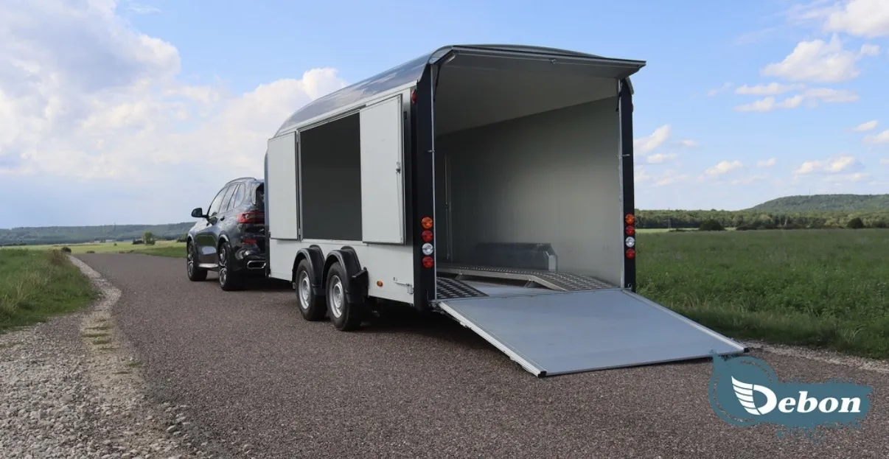
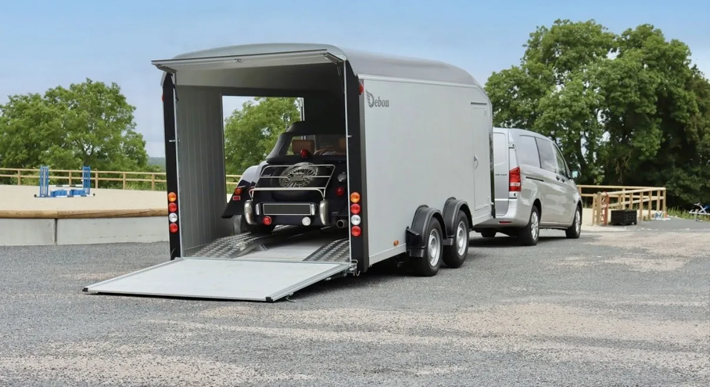

Perché un carrello chiuso per la tua supercar
Una Ferrari, una Lamborghini o una Porsche GT non dovrebbero mai viaggiare esposte. Su un carrello aperto o su una bisarca l'auto prende pioggia, sale, polvere, sassolini e moscerini per centinaia di chilometri, e resta in vista di chiunque per tutto il viaggio. Con il trasporto in carrello chiuso la vettura viaggia al coperto, in un vano dedicato solo a lei, e arriva a destinazione pulita e nelle stesse condizioni in cui l'abbiamo caricata.
- Protezione totale dagli agenti esterni: pioggia, neve, sale stradale in inverno, grandine, sassi e insetti restano fuori.
- Discrezione assoluta: nessuno vede che cosa trasportiamo. Ideale per auto di valore, prototipi, auto appena acquistate o vetture da collezione.
- Un solo veicolo a bordo: la tua auto non viaggia insieme ad altre, non attende il riempimento di una bisarca e parte quando serve a te.
- Carico studiato per auto basse: rampa posteriore ribaltabile, per caricare con cura anche vetture con assetto ribassato e spoiler anteriori delicati.
Il carrello: Debon Roadster C900
Abbiamo scelto il Debon Roadster C900, uno dei carrelli chiusi più apprezzati in Europa per il trasporto di auto sportive e d'epoca. Carrozzeria e pianale in alluminio, doppio asse frenato con sospensioni indipendenti e ammortizzatori: un carrello leggero e stabile, che rende il viaggio fluido anche sulle lunghe distanze.
| Misure utili per la tua auto | |
|---|---|
| Lunghezza interna | 497 cm |
| Larghezza interna | 202 cm |
| Altezza interna | 206 cm |
| Peso massimo del veicolo trasportato | 2465 kg |
Non sei sicuro che la tua auto ci stia? Inviaci marca e modello: verifichiamo noi le misure prima del preventivo.

Quali auto trasportiamo nel carrello chiuso
Il servizio è pensato per tutte le vetture che meritano un trasporto riservato e protetto:
- Supercar e hypercar: Ferrari, Lamborghini, McLaren, Porsche GT, Aston Martin, Bugatti.
- Auto di lusso: Rolls-Royce, Bentley, Mercedes-AMG, Maserati.
- Auto d'epoca e da collezione: vetture storiche dirette a raduni, concorsi d'eleganza, restauri o aste.
- Auto sportive e da pista: vetture da track day e da gara, verso circuiti in Svizzera, Italia e Germania.
- Auto nuove o appena acquistate: consegne per concessionari e privati che vogliono ricevere l'auto a chilometri zero e senza un granello di polvere.
Il trasporto è sempre con autista
Il carrello chiuso non si noleggia: ogni trasporto è eseguito dal nostro personale, che conosce l'attrezzatura e sa come caricare e fissare correttamente una vettura di valore. Tu ci dai l'indirizzo di ritiro e quello di consegna, al resto pensiamo noi.